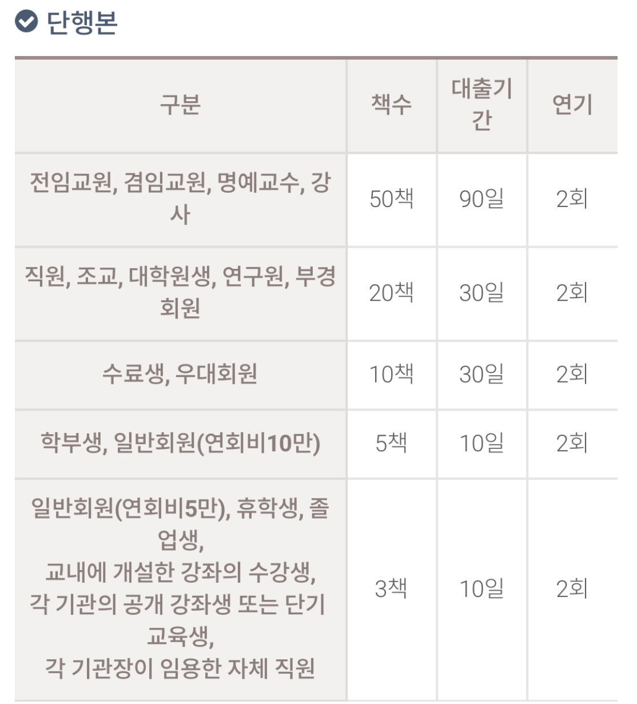
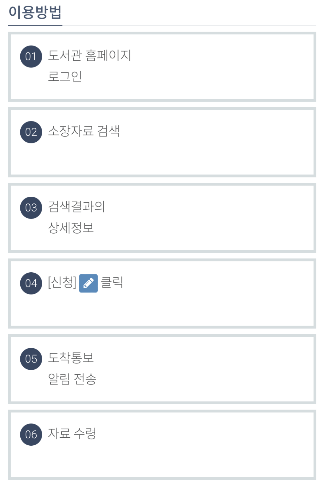
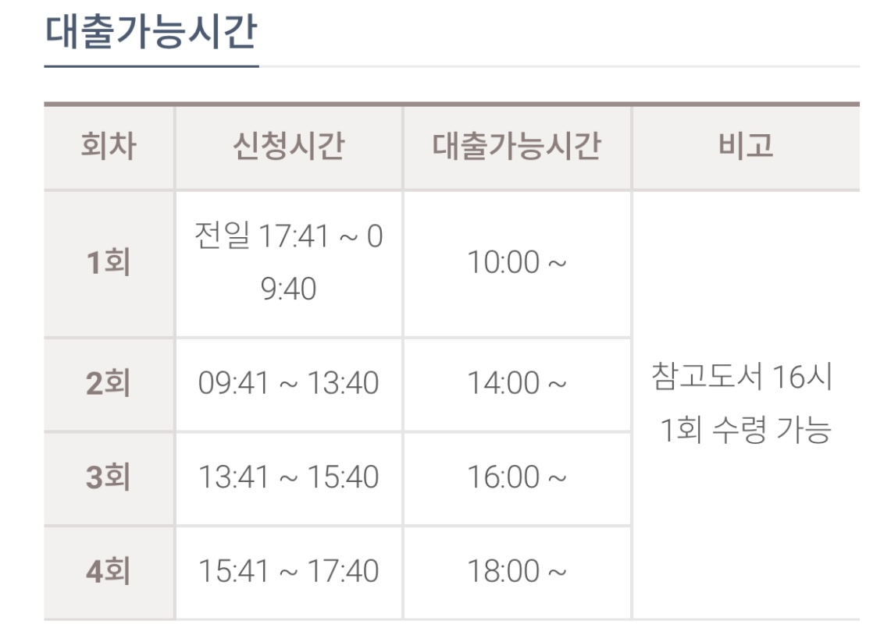
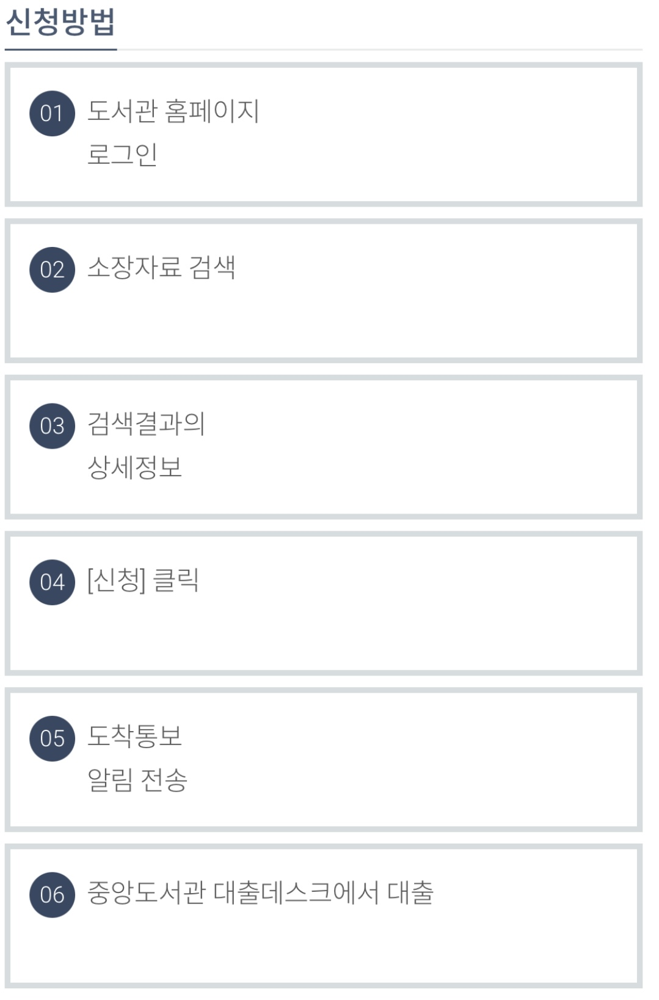
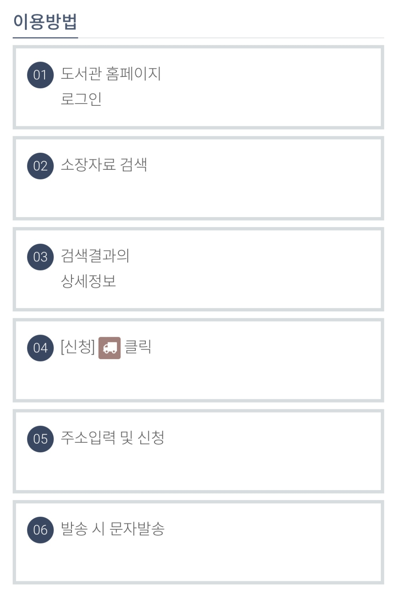

▶참고사항
연기는 연기일로부터 대출기간만큼 반납예정일이 증가함.
대출기간은 공휴일 등 도서관 휴관일을 산정하지 않음.
연속간행물, 참고도서, 어학잡지 등은 자료의 효율적 활용을 위해 관외대출 불가.
방학 기간에는 도서관장이 반납기한을 조정할 수 있음.
2개 이상의 대출가능 신분이 있는 경우, 유리한 조건의 신분 1개만 사용가능.
▶이용대상
단행본 : 이용빈도가 적고, 발행년이 오래된 자료
참고도서 : 사전, 핸드북, 연감, 도감 등 (※ 대출 불가, 열람 가능)


▶대출 대기일 : 3일(SNS, e-mail 통보 당일 제외)
처리결과는 SNS로 전송되며, "내 정보 보기> 신청자료 현황> 보존서고 신청현황"에서도 확인가능
온라인 신청이 불가능한 이용자는 데스크에 신청
▶자료수령 장소
일반도서(단행본) : 중앙도서관 1층 대출실
참고도서 : 중앙도서관 4층 연속간행물실

도착통보(SNS, e-mail)를 받은 후, 중앙도서관 1층 대출실에서 대출
주 1회 실시, 화요일 12:00까지 신청
대출가능시간 : 수요일 17:00 이후 대출
대출대기일 : 4일(SNS, e-mail 통보일 포함)
신청도서 확인 : 내 정보 보기▶ 신청자료 현황
도서수령: 중앙도서관 1층 대출데스크

▶이용대상 : 학내구성원(휴학, 수료중인 학생 포함), 지역주민(유료회원)
대출대상자료 : 국내 외 단행본
매일 1회 택배 발송 (주말 및 공휴일 제외)
왕복택배비는 신청자가 부담(우체국 택배 기준 4,500~)
자료가 분실되거나 서가에 없는 경우 취소될 수 있음
▶이용기간 : 신분별 대출기간에 따름
단, 택배발송기간을 고려하여 학부생은 대출기간 +5일 추가
▶반납 방법
중앙 도서관 방문 반납
대출 데스크 반납 또는 무인반납기를 이용하여 반납
중앙도서관 택배 반납
대출한 자료를 포장하고, 선불택배를 이용하여 반납
※주소 : (48513)부산광역시 남구 용소로 45 부경대학교 중앙도서관 1층 대출데스크